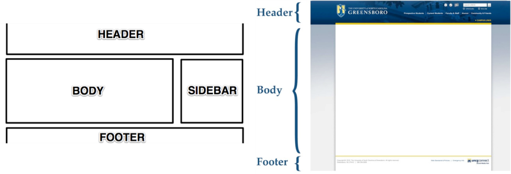

Para este mini-curso será utilizado a plataforma de desenvolvimento Koding. Acesse o link https://koding.com e crie uma conta.
HTML (HyperText Markup Language) usa uma sintax que consiste de elementos inclusos nos símbolos ‘<’ e ‘>’ chamados de Tags. Apesar de haver diferentes designs e apresentações para uma página web, a estrutura básica consiste em:
Onde o código para esta estrutura é:
<!DOCTYPE html>
<html>
<head>
<title>Titulo</title>
</head>
<body>
<h1>Conteúdo da Página</h1>
<p> Textos, imagens, vídeos, visualizações, etc.. </p>
</body>
</html>
Dentro da pasta “Web” no seu workspace do koding no arquivo chamado “index.html”, copie e cole e código acima e salve com o nome de “index.html”. Abra este arquivo usando um navegador web para visualizar a estrutura. A seguir estão listados importantes Tags usadas em páginas HTML.
Um conceito importante para o uso de HTML e CSS são os atributos ‘id’ e ‘class’ que podem ser usados em conjunto com uma Tag HTML para sua identificação. O atributo ‘id’ é um identificador único, enquanto que ‘class’ pode ser compartilhado entre diferentes elementos. Na estrutura criada anteriormente e copiada dentro do arquivo “index.html”, adicione uma divisão “div” dentro da Tag “body” como mostrado abaixo.
<!DOCTYPE html>
<html>
<head>
<title>Titulo</title>
</head>
<body>
<div id="container_principal"></div>
</body>
</html>
Enquanto um arquivo HTML lida diretamente com o conteúdo e a estrutura apresentada, o CSS (Cascading Style Sheets) é usado para a formatação do estilo da página web. Um arquivo CSS consiste em seletores, propriedades e valores.
Seletor1,
Seletor2,
Seletor3 {
Propriedade1: valor1;
Propriedade2: valor2;
Propriedade3: valor3;}
Uma lista com todas as propriedades por ser encontrada no link: https://developer.mozilla.org/pt-BR/docs/Web/CSS/CSS_Reference
Crie um novo arquivo com o nome de “base.css” e adicione o código escrito abaixo:
#container_principal {
border: 1px solid; /*cria uma borda ao redor da divisão*/
border-radius: 5px; /*arredonda as extremidades da borda criada*/
width: 800px; /*altera a largura do elemento*/
height: 300px; /*altera a altura do elemento*/
margin: auto; /*altera automaticamente o margem do elemento em relação à onde ele está inserido. No caso deste elemento, a margem é em relação ao espaço geral do navegador*/}
Note o uso do símbolo “#” antes do seletor “container_principal” indicando que o elemento selecionado faz referência a um “id” da página web. Caso a intenção seja selecionar um “class”, o símbolo utilizado antes do seletor seria “.”.
Para visualizar as alterações do CSS na página web é necessário referenciar o arquivo CSS dentro do arquivo HTML. Para isso, é necessário o uso de uma tag chamada “link”, como descrito baixo.
<!DOCTYPE html>
<html>
<head>
<link rel="stylesheet" type="text/css" href="css/base.css">
<title>Titulo</title>
</head>
<body>
<div id="container_principal"></div>
</body>
</html>
Em um navegador web, acesse o link username.koding.io para ver o resultado.
Javascript é uma linguagem usada para tornar as páginas web dinâmicas através de scripts executados no cliente-side. Por exemplo, como Javascript você pode:
O script Javascript será usado para ler os dados e gerar as visualizações. Para começar, crie um arquivo com o nome de “script.js”. Para ler os arquivos em CSV será usado a biblioteca d3.js para manipulação dos dados. Copie o seguinte código dentro do arquivo “script.js”.
var dsv = d3.dsv(";", "text/plain");
dsv("data/atores.csv", function(d) {
var values = [];
for(var key in d){
values.push(d[key]);
}
return {values}
}, function(error, rows) {
console.log(rows);
});
O d3.dsv é uma função para leitura de arquivos CSV onde se é escolhido o delimitador desejado. No caso dos arquivos de atores, o delimitador é um ponto e virgula “;”. Após a leitura, uma função de call-back é chamada para converte os dados em um objeto Javascript.
var dsv = d3.dsv(";", "text/plain");
dsv("data/atores.csv", function(d) {
var values = [];
for(var key in d){
values.push(d[key]);
}
return {values}
}, function(error, rows) {
console.log(rows);
});
No arquivo index.html, temos que referenciar o código Javascript que foi criado. Isso é feito com a adição da seguinte Tag (parecido com o que foi usado para referenciar o arquivo CSS). Além disso, a biblioteca d3.js também deve ser referenciada. Como esta biblioteca é disponibilizada gratuitamente pelo site d3js.org, podemos usar uma URL para fazer esta referência.
<!DOCTYPE html>
<html>
<header>
<!-- CARREGA AS DEPENDENCIAS -->
<script src="http://d3js.org/d3.v3.min.js"></script>
<!-- CARREGA O ARQUIVO CSS -->
<link rel="stylesheet" type="text/css" href="css/base.css">
<!-- CARREGA O ARQUIVO JAVASCRIPT -->
<script type="text/javascript" src="js/script.js"></script>
</header>
<body>
<div id="main_container"></div>
</body>
</html>
Acesse a página da aplicação novamente, clique com o botão direto do mouse dentro da página e abra o inspetor de elementos. Com o inspetor aberto, entre na aba “console” para ver a estrutura criada.